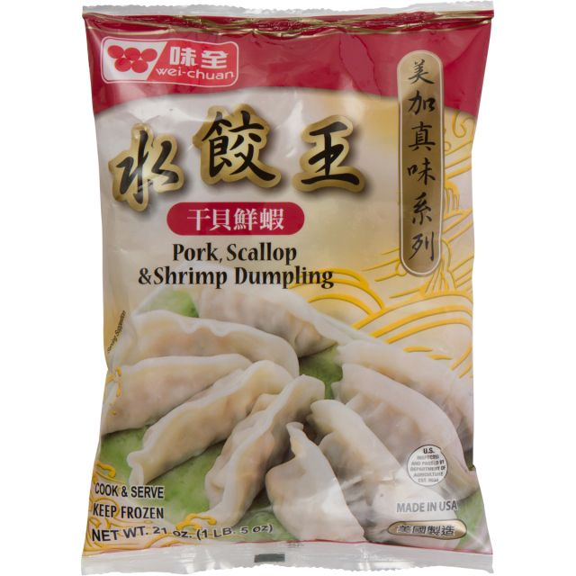
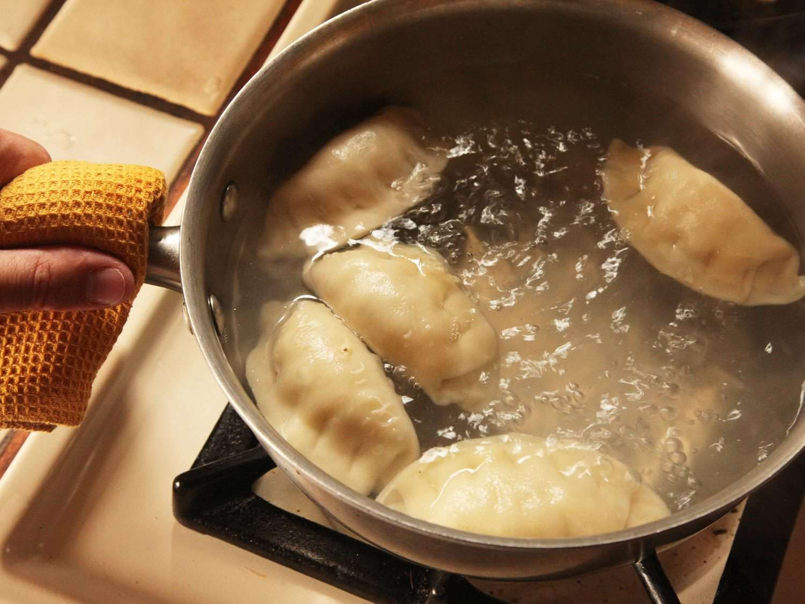
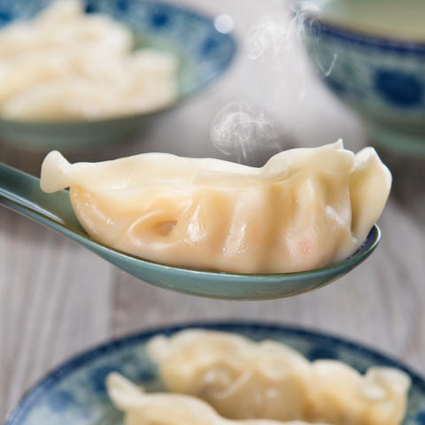
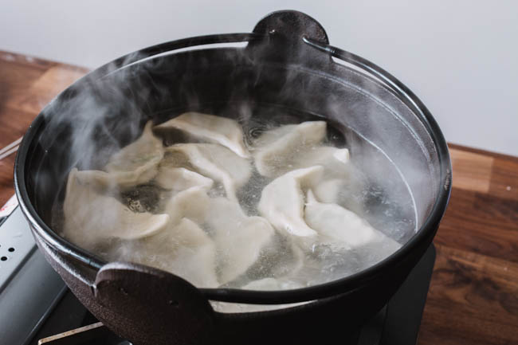
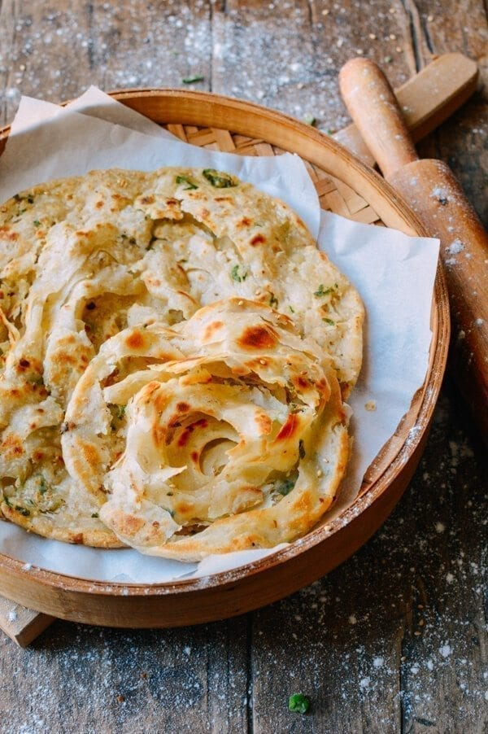

Double Chocolate Cookies
Origin: Michigan Source: Family Recipe Category: Dessert
My daughter learned to make these cookies at a baking camp at Zingermanns and has tweaked the recipe to fit the taste buds of her siblings. They are extremely sugary so the salt helps to balance it. Note, these cookies are best eaten very quickly.
Recipe Ingredients
- Unsalted butter
- Granulated Sugar
- Packed light or dark brown sugar
- Large egg
- Pure vanilla extract
- Semi-sweet chocolate chunks (melted)
- All-purpose flour
- Natural unsweetened cocoa powder
- Baking soda
- Salt
- Semi-sweet chocolate chunks
Recipe Steps
- In a mixing bowl cream together the butter, granulated sugar, and brown sugar
- Add the egg and vanilla extract and beat well
- Add the melted chocolate
- In a separate bowl combine the flour, baking soda, cocoa powder and salt
- Combine the wet and dry ingredients
- Add the unmelted chocolate chunks.
- Form 15 cookies and place on a baking sheet.
- Cook for 12 to 13 minutes at 350 degrees.
Additional Food images


Frozen Dumplings
Origin: China Source: Frozen Food Category: Main Dish Frozen dumplings are a common food among Chinese international students. Because of the workload at school, they do not have a lot of time making dinner, so frozen dumplings is one of their options for dinner
Recipe Ingredients
- A Bag of Frozen Dumplings
- 1 Liter of Water
Recipe Steps
- Put water in a cooking pot
- Boil the water
- Add frozen dumplings
- Stir gently
- Cook for 10 minutes on high heat
- Wait for the dumplings to float
Additional Food images
  Shou Zhua Bing: Crispy Chinese Pancake (Frozen)
Origin: China Source: Frozen Food Category: Main Dish Crispy Chinese Pancake, AKA Shou Zhua Bing, is a famous Chinese fast food that can be served both as a main or a appitizer.
Recipe Ingredients
- A Frozen Crispy Chinese Pancake
- Cooking Oil (Optional)
- Any ingredients you like: lettuce, beef, pork
Recipe Steps
- Heat up the wok/frying pan
- Add 10 ml of cooking oil (Optional)
- Add frozen crispy chinese pancake
- Fry one side for 1 minute and flip
- Repeat the previous steps until both sides are golden and crispy
- Add any ingredients you like and wrap it up like a burrito